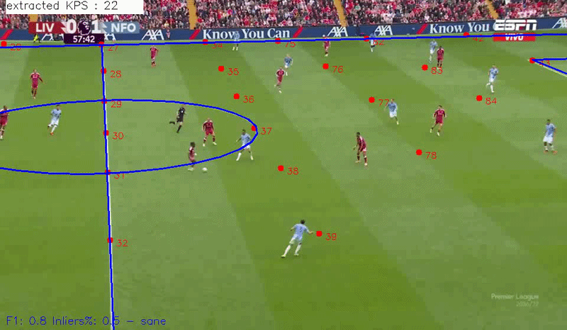

Broadcast-to-pitch homography
A perspective-transformation system that maps broadcast footage to pitch coordinates. A convolutional autoencoder detects pitch landmarks and associates them with template keypoints; a second CNN detects visible pitch lines and acts as a quality-assurance check on each homography. I replaced classic RANSAC's inlier test with an IoU-based metric, giving faster and more accurate transformations.

Add assets/homography.gif